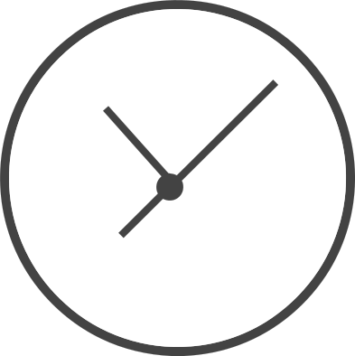

Warning: All these icons can`t open apps. I`ve not developed codes for dinamically list or open apps. These examples are not yet functional. Soon I`ll do this.
Show dialog
Oh, sorry!
This function was not been implemented, yet. Developer Tip: You can submit a pull request with this function in GitHub!
Oh, sorry!
This function was not been implemented, yet. Developer Tip: You can submit a pull request with this function in GitHub!
B
Internet Boat
C
CameraClockContacts
D
DevicesDialer
F
File Explorer
G
Gallery
M
MessengerMicrophoneMusic
N
Notes
S
Store.jsEventlr
Warning: All these icons can`t open apps. I`ve not developed codes for dinamically list or open apps. These examples are not yet functional. Soon I`ll do this.
Warning: All these icons can`t open apps. I`ve not developed codes for dinamically list or open apps. These examples are not yet functional. Soon I`ll do this.
Oh, sorry!
This function was not been implemented, yet. Developer Tip: You can submit a pull request with this function in GitHub!
Oh, sorry!
This function was not been implemented, yet. Developer Tip: You can submit a pull request with this function in GitHub!
0-9
2048
B
Battleship
P
Pixel Paint
R
Rock Paper Scizor
S
Symbolistic
T
Tic Tac Toe
Warning: All these icons can`t open apps. I`ve not developed codes for dinamically list or open apps. These examples are not yet functional. Soon I`ll do this.